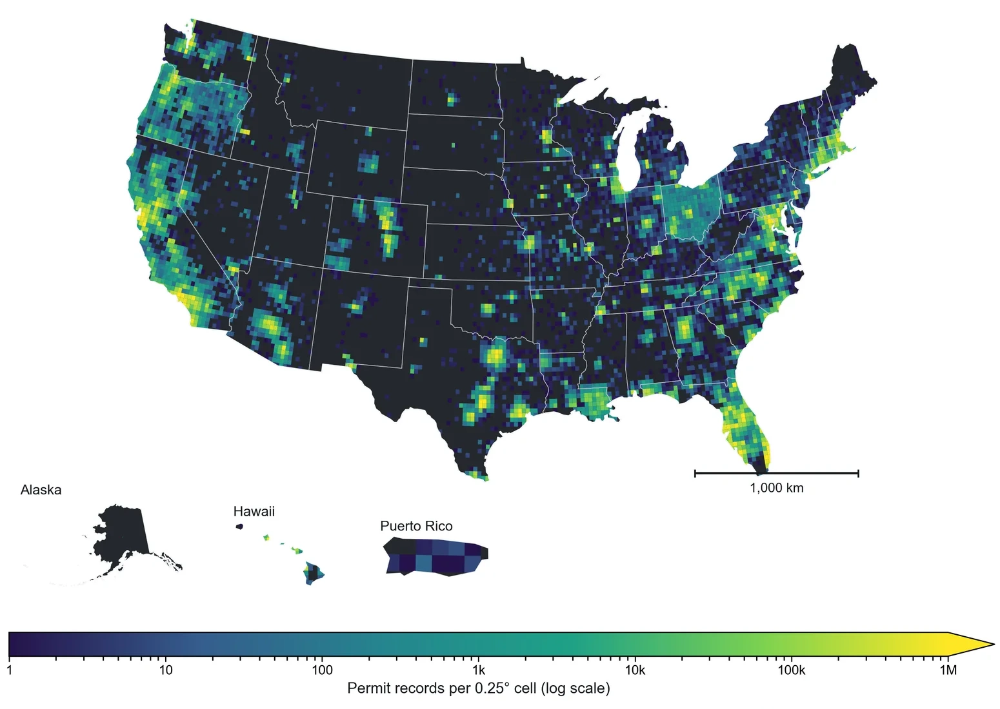
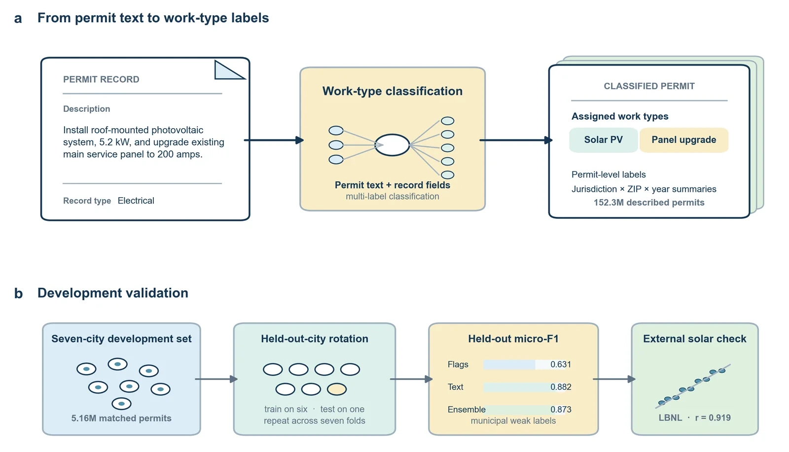
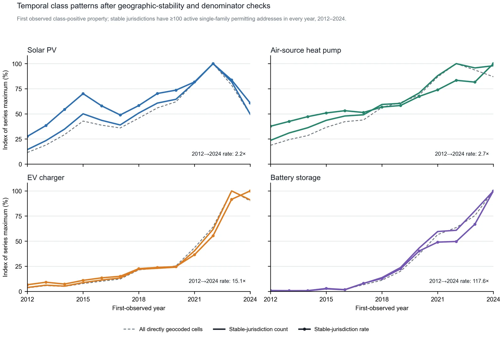

Building permits are among the most complete records of physical change to the U.S. built environment. Local authorities classify work for administrative purposes, producing vocabularies with different levels of granularity and few shared definitions. The national Building Permits Survey counts newly authorized housing units, leaving most work on the existing stock unmeasured.
PermitKey combines a general procedure with a national corpus of 150,044,555 source-record occurrences from 85 contributions. The procedure treats jurisdiction-supplied labels as weak supervision, trains a multi-label classifier over permit descriptions against an analyst-specified taxonomy, and validates the result against source labels and blind human review. Candidate labels follow a documented 25-category work-type taxonomy.

Most of the buildings that will stand in the United States in 2050 have already been built. Whether the country decarbonizes its buildings, adapts them to a hotter and more hazardous climate, and houses a population with evolving ways of living and working depends on what is done to the existing stock: kitchens remodeled, roofs replaced, accessory dwelling units added, electrical panels upgraded, heat pumps and rooftop solar installed, and structures hardened against wind, fire, and flood.
The local records themselves are richer. Jurisdictions issue permits for new construction, alterations, additions, demolitions, roof replacements, electrical and mechanical work, and equipment installation. Public records are dated, tied to a property or jurisdiction, and often accompanied by free-text descriptions. Taken together, they provide a near-national view of physical change at the moment work is authorized.
The central challenge is comparability. Permit authorities classify work for administrative and fee-setting purposes, so source vocabularies differ by orders of magnitude in granularity. PermitKey separates source preservation from analytic harmonization: native labels and provenance remain traceable, while a shared taxonomy supplies a common measurement frame.
PermitKey begins with public records from local permitting portals. Each source contribution is retained as a source-record occurrence with its native labels, description text, dates, coordinates, portal provenance, and stable identifiers. Coverage and missingness are recorded explicitly, with unavailable fields carrying an explicit unknown state.
Jurisdiction-supplied labels provide weak supervision: they are abundant and reflect each jurisdiction’s administrative vocabulary. We normalize descriptions and structured fields, train independent classifiers against an analyst-specified taxonomy, and allow multiple work types on one record because a permit can authorize several jobs at once. The current Natural25 taxonomy spans construction, alteration, demolition, building systems, exterior work, sitework, and energy technologies.

Model outputs are checked against source labels and blind human review, with class-specific performance and uncertainty reported separately. The current audit contains 3,080 completed human judgments; a historical held-out-city evaluation reports micro-F1 of 0.874. Eligibility, geography, source-rights, and disclosure checks govern the derived tables at permitting-jurisdiction × year × work type and, for reliably geocoded records, 0.1° grid × year × work type.
Public aggregate release
Explore the PermitKey release hub for the aggregate tables, taxonomy, provenance, and validation record.
The public tables are indexed by permitting jurisdiction, year, and work type, with a companion 0.1° grid table for reliably geocoded records. Records located only to a jurisdiction are included in the jurisdiction-level table. Category counts can overlap because records can carry multiple work types.

These tables support research on housing supply, retrofit and electrification, climate adaptation, construction cycles, neighborhood change, and the evaluation of building-performance standards and clean-energy incentives.
Coverage and field quality vary across jurisdictions and years. Source records are occurrences, and multi-label counts are interpreted by work type. Weak supervision inherits information from local labels; human-review estimates and source-rights checks are included in the release record. Aggregate geography and disclosure rules are applied to every public table, with coverage and uncertainty documented alongside it.
For manuscripts, talks, and other work citing the current version, use:
Martinez, C., Lewis, S. H., Fan, Y., & Zheng, S. (2026).
PermitKey: A harmonized national work-type classification of 150 million
U.S. building permit records. Manuscript under review.
https://permitkey.github.io/